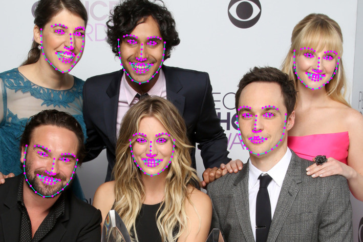

face-recognition¶
Dieses Projekt enthält einen Service, der das Erkennen bzw. Trainieren und basierend auf den dabei entstehenden Daten auch die Wiedererkennung von Gesichtern ermöglicht. Der Service sollte dann später von Gruppe 6 durch das von ihr entwickelte UI verwendet werden, um im Rahmen einer Auftragsverarbeitung zusätzlich Gesichtsdaten zu speichern und einen späteren Auftragsdatenabruf per Gesichtserkennung zu ermöglichen. Aus Zeitgründen wurde er jedoch zunächst in das Demo-Projekt der Gruppe 7 eingebunden.
Evaluation¶
Zunächst musste eine Bibliothek gefunden werden, die die Anforderungen an die Gesichtserkennung abdeckt und dabei möglichst schnell und zuverlässig Arbeitet. Zu diesem Zweck wurden durch die Gruppenmitglieder die python-basierte Bibliothek facenet (Ba Thinh Tran) und die javascript-basierte Bibliothek face-api.js (Joshua Lieser) miteinander verglichen.
facenet:
Training Set |
Test Set |
Recognition |
Ø Dauer (s) |
|
|---|---|---|---|---|
train_img |
10 personen, 200 bilder |
hard_thinh |
14/15 |
4,82 |
train_img_lfw |
5000+ personen, 13000+ bilder |
hard_thinh |
0/15 |
8,20 |
train_img_lfw |
5000+ personen, 13000+ bilder |
easy_thinh |
0/15 |
8,11 |
face-api.js:
Training Set |
Test Set |
Recognition |
Ø Dauer (ms) |
|
|---|---|---|---|---|
train_img |
10 personen, 200 bilder |
easy_thinh |
13/14 |
13,31 |
train_img |
10 personen, 200 bilder |
hard_thinh |
13/15 |
13,69 |
train_img_lfw |
5000+ personen, 13000+ bilder |
easy_thinh |
12/14 |
276,08 |
train_img_lfw |
5000+ personen, 13000+ bilder |
hard_thinh |
13/15 |
276,85 |
Die Wahl viel aufgrund der hohen Erkennungsrate und kurzen Dauer schließlich auf face-api.js.
Trainieren von Gesichtern¶
Der face-recognition Service unterstützt das Trainieren von Gesichtern. Hierzu wird versucht das größte / deutlichste Gesicht in einem Bild zu erkennen. Das Bild muss dazu unter /face-recognition/train-images/<label>/<image-name> auf MinIO abgelegt und sein Name anhand der jeweiligen MQTT Message übergeben werden. Falls ein Gesicht erkannt wird, werden 68-Punkt Face Landmarks dafür berechnet und in einem Folgeschritt schließlich ein Facedeskriptor bestehend aus 128 Float-Werten, der später für die Wiedererkennung benötigt wird. Ermittelte Deskriptoren werden als /face-recognition/descriptors/<label> abgelegt. Bei Erfolg wird auf dem entsprechenden MQTT topic der ermittelte Score für das Gesicht publiziert, ansonsten eine Fehlermeldung.
Beispiel für 68-Punkt Face Landmarks:
{kind=link}
Wiedererkennung von Gesichtern¶
Auf Basis zuvor trainierter Gesichter können Personen wiedererkannt werden. Hierfür wird ein Bild auf MinIO unter /face-recognition/query-images/<image-name> abgelegt und sein Name über die entsprechende MQTT Message übergeben. Dann wird zum übermittelten Bild der Facedeskriptor ermittelt, der mit Hilfe des Euklidischen Abstands (Euclidian Distance) mit gespeicherten Deskriptoren verglichen wird. Wird bei den Vergleichen eine bestimmte Distanz unterschritten, so wird das Label des entsprechenden Bilds über MQTT ausgegeben. Sollte keine Person wiedererkannt werden wird eine Fehlermeldung gesendet.